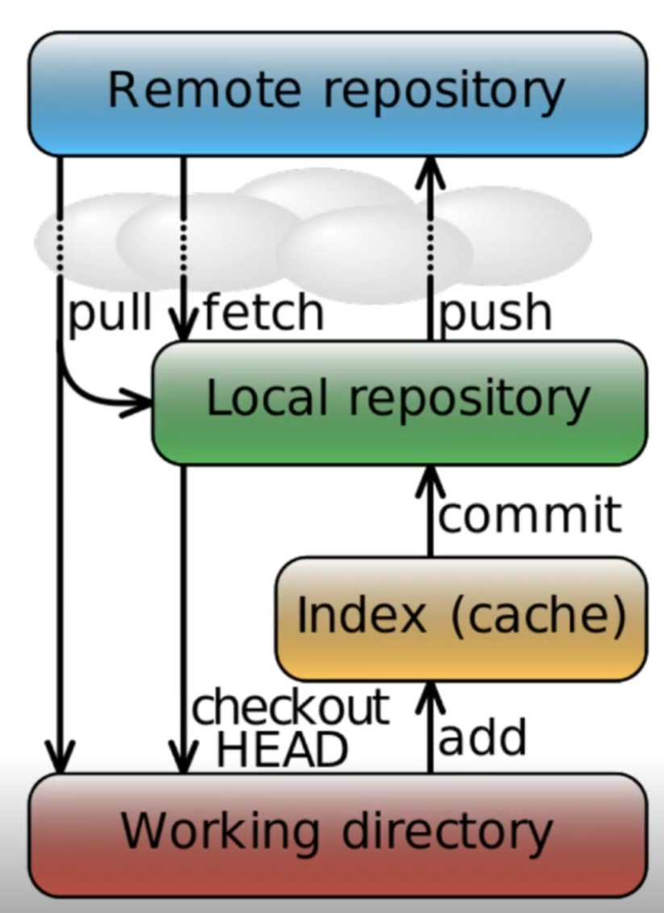
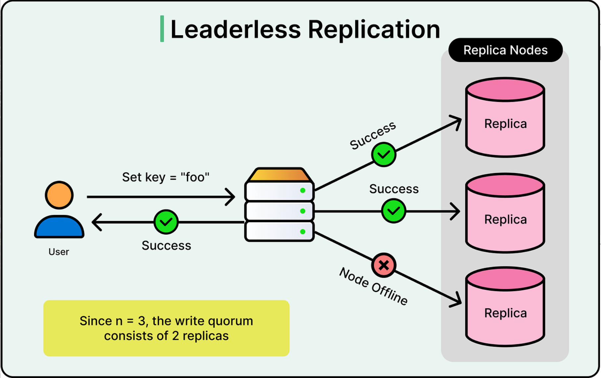

Git 自學筆記
此篇筆記為線上課程內容/書本為主，網路上的資料為輔
為了實機操作以達到熟練的目的，請先建置環境，下載git bash
資源:
為自己學 Git
git官方手冊繁中
pro git 繁中
Git 學習筆記
30 天精通 Git 版本控管
前言:git是什麼???
好問題…讓我廢話:)
來源:Day1｜【Git】學習 Git 的第一步驟 - 什麼是 Git？
Git 的優點
1.免費、開源
2.速度快、檔案體積小
3.分散式系統
4.可以在沒有伺服器或是沒有網路的環境，依舊可以使用 Git 來進行版控，待伺服器恢復正常運作或是再有網路的環境後再進行同步，不會受影響。
5.處理檔案的方式
6.其他版本控制：記錄每個版本之間的「異動」，
Git ：主要在於記錄「檔案內容」，並更新紀錄整個目錄與檔案的樹狀結構。
Git 的缺點
1.易學難精、指令多
2.資安問題
2-1.若是將重要的資料也要丟到GIT上面或是沒有處理好了話，重要資料很有可能被駭客竊取。
2-2.如果你不小心把密鑰（API Key）Commit 進去，就算下一秒刪除它，它依然存在於 .git 的歷史紀錄中
3.Git 是一款版本控制軟體，而 GitHub 是一個商業網站，GItHub 的本體是一個 Git 伺服器。
你看完優缺點是不是還搞不懂，沒事我也不知道我在幹嘛
來源:為自己學 Git
你是不是看到linux之父的大中指了呢?那就對了
git就是他開發的
簡單來說(對不起太多廢話
他就是可以上傳專案到github/gitlab的一個東西，他還可以上傳在以下:
常見的：
1.Bitbucket：也是很常見的 Git 託管平台，很多公司會用
2.Azure DevOps Repos：微軟家的，常跟公司內部開發流程一起用
3.Gitea：輕量、可自己架在伺服器上
4.Forgejo：和 Gitea 很像，也是可自架
5.SourceHut：比較偏工程師風格，介面很簡潔
6.AWS CodeCommit：AWS 上的 Git 服務
這邊很無聊所以我廢話會多一點
常用的terminal程式碼
更詳細:Terminal 常用指令筆記 - Command Line
1.git版本控制系統遠端倉庫/本地倉庫/和暫存之間的指令互動流程來源

2.Git 上傳專案步驟
1. 安裝完 Git 後要做的第一件事情：
設定這台電腦的 Git 使用者名稱與電子郵件
2. 將目前目錄初始化為 Git 儲存庫（repository）
3. 查看目前工作目錄與暫存區狀態
4. 把工作目錄中的變更放進暫存區（staging area），準備給下一次 git commit 提交。
. 代表目前目錄及其子目錄中的變更
5. 輸入提交訊息，將暫存區的內容正式提交成一個版本
6. 查看提交紀錄（註解會顯示）
7.列出指定檔案每一行最後是被哪個 commit 修改的
8.刪除目前資料夾中的 .git 資料夾，等於移除這個專案的 Git 歷史、分支與遠端設定。
常用於：把複製來的舊 Git 專案改成全新的 Git 專案(再git init一次)。
9.將當前所在的分支強制重新命名為main
Git-了解分支&分支(建立、切換、刪除、回復)
- git branch: 這是 Git 中用來管理分支（列出、建立或重新命名）的基本指令。
- -M: 這是 –move –force 的縮寫。它會執行「強制移動/重新命名」，即使目標名稱（main）已經存在，也會將其覆蓋。
- main: 這是你想要設定的新分支名稱。
10.新增一個名為 origin 的遠端儲存庫連線(其實可以隨便取)
11.把本地 main(看你的分支名稱，叫什麼果不對看下面幾行) 分支推送到遠端 origin，並建立追蹤關係
-u (upstream) 的準確作用是讓本地分支與遠端分支「連結」。設定好之後，以後只要輸入 git push 或 git pull，Git 就知道要對應哪一個遠端分支
不確定分支名稱可以先git branch
如果要改分支就git branch -M 你要的分支名稱
12.git 一次推上去常用流程(一步一步來)
3.查看你在 Git 上操作的內容
比較修改前後的檔案內容
顯示你已經修改但尚未執行 git add 的內容
顯示 commit 的詳細修改紀錄
4.列出檔案每行修改紀錄
顯示每一行內容的\作者\時間…等資訊
5.從github下載專案
1.先跟遠端連線，把遠端最新資料更新到你本地儲存庫裡的遠端追蹤分支
流程:先跟遠端連線，把遠端最新資料更新到同一個本地儲存庫裡的遠端追蹤分支，但不是放進你現在工作的本地分支，然後再查看比較(看你朋友有沒有亂改東西有的話再pull合併進你的本地分支)(分支在儲存庫裡!!)
2.從遠端分支抓最新資料到本地，然後合併到你目前本地分支；如果合併後有變更，工作目錄就會跟著更新
簡單來說git pull= git fetch + git merge
流程:
第 1 步：先更新遠端追蹤分支(這一步跟 git fetch 一樣)
第 2 步：再把它合進你現在本地的分支(先放同一個本地儲存庫，再從旁邊合到你現在正在用的分支。)
3.從github下載專案
6.切換版本
git checkout 命令
說明：git checkout <sha1> 會讓 HEAD 指向該版本，並把工作目錄更新成該版本的檔案內容，藉此達到切換到舊版本commit的效果
說明：將工作目錄中的指定檔案，替換成指定過去版本 commit 中的檔案內容
或
說明：切換到目前 HEAD 指向的版本。HEAD 是一個指標，代表你目前所在的位置；在一般情況下，它通常指向目前分支的最新 commit。
假如說不滿意此次修改檔案裡的程式碼，而且還未commit，就可以透過這個方法來回到HEAD版本commit
或
或
git會默認目前用head版本commit
git checkout – <file>
所有檔案變成head版本commit
git checkout – .
7.將工作拆分成可能時進行的分支
30 天精通 Git 版本控管 (08)：關於分支的基本觀念與使用方式
基本概念
儲存庫裡面有分支
分支上會有很多版本
每個版本記錄當時的檔案狀態
簡化成一條：
儲存庫 > 分支 > 版本(commit)
分情況看分支是否存在
1. 還沒建立儲存庫前
這時候 沒有分支，因為連 Git 儲存庫都還不存在。
2. git init 之後，但還沒 commit 前
這時候可以說：
Git 已經準備要有一個預設分支
但它還 沒有真正指向任何版本
所以這個分支還是「空的」
這種狀態常被理解成：
有分支名稱
但還沒有分支內容
因為還沒有第一個 commit
3. 第一次 commit 之後
這時候分支才算真正建立完成，因為：
分支會指向第一個 commit
之後每次 commit，分支就往前移
在版本裡面新增分支名為branchname
在指定的版本裡面新增分支名為branchname
刪除名為branchname的分支
切換到名為branchname的分支
8.合併以完成的分支
將branchname分支合併到工作目錄
9.將想要的commit獨立插入
[Git] Cherry-Pick 使用場景
通常是把已發布的分支修正bug之後，把同一個bug也在其他分支修復
和 merge 的差別
merge:
把另一個分支的整段歷史合進來
cherry-pick:
只拿其中一筆或幾筆 commit
常見操作流程:
10.重新設定目前分支的內容
Git 版本控制：利用 git reset 恢復檔案、暫存狀態、commit 訊息
1.版本退回去，但你改過的內容全部還留著，而且還是 add 好的狀態
像是：
你做了 3 次 commit，現在想重做
那就可以用 –soft 退回去，然後重新 commit 一次
白話：
commit 被取消了，但那些修改還是維持「已 add」狀態。
commit 沒了
但修改還在
而且已經幫你放在暫存區
像是你只是想把 commit 拆掉，等等重新 commit
2.版本退回去，但你改過的檔案還在，只是取消 add
取消 commit，也取消 add，但檔案還在。
白話：
commit 被取消了，但那些修改雖然還在，卻不再是 add 狀態。
commit 沒了
修改還在
但你要重新 git add
3.你的資料夾和分支會直接變回 <sha1> 那個版本的樣子
現在這個版本裡，不屬於 <sha1> 的東西，幾乎都會被清掉
修改內容也不要了，直接整個回到那個舊版本
總結：
soft：
commit 退回去
add 保留
檔案修改保留
mixed：
commit 退回去
add 取消
檔案修改保留
hard：
commit 退回去
add 取消
檔案修改也取消
4.查詢工作目錄head就可以去使用git resrt<sha1>變更歷史
11.合併已完成的分支(2)
將工作目錄(head)的所有紀錄嫁接到<branchname>的分支上
12.暫存還不想放到正式紀錄的工作
【Git與GitHub】git stash 暫存檔案
暫存儲存當前目錄到stash裡面
staging area = git add 放進去的地方
stash = 另一個專門拿來暫時收納修改的地方
把「你改了哪些檔案、哪些內容」記下來，然後把工作目錄盡量恢復乾淨
所以修改會消失，因為修改的整個目錄都會恢復原狀
列出目前已經放在站存堆疊的內容
stash@{0} = 最新那筆
stash@{1} = 再前一筆
stash@{2} = 更早那筆
還原暫存
1.以類似合併的方式把stash裡面的內容套回來
2.可能成功，也可能發生衝突
3.pop 放回來後，通常也會把那筆 stash 刪掉
清除最新暫存
13.三種存取模型
1.分散式貢獻者模型(dispersed)
分散式貢獻者模式
分散式版本控制系統 git & gitHub
5.1 分散式的Git - 分散式工作流程
後端工程師的第二堂課 (22) 分散式系統

2.共處一地貢獻者模型
共處一地貢獻者儲存庫模型
3.共享維護模型
共享維護模型
14.取消曾經做過的工作
常發生在<sha1>的變更內容錯誤，需要還原的時候
常發生在某個 <sha1> 的變更內容有錯，需要還原時。
git reset <sha1> 是把分支指標移回指定的 commit，後面的 commit 會從目前這條分支的歷史上消失。
git revert <sha1> 則是針對指定 commit 做反向操作來抵銷<sha1>進行的修改，並新增一個新的 commit 來抵銷它的影響，所以歷史不會消失。
reset 與 revert 的差別
reset：把分支指標往回移，後面的 commit 會從這個分支的歷史上消失。
revert：新增一個 commit 去抵銷某個舊 commit 的內容，因此歷史會保留。
使用時機
已經 push 到遠端：通常使用 git revert
不會改寫歷史
團隊成員 git pull 不會因為歷史被改寫而出問題
但 revert 完成後，還是要再 git push 一次，遠端才會同步這個還原 commit
15.git diff和git log的進階用法
顯示再暫存區的所有變更
暫存區 vs 最後一次提交 (HEAD)
顯示已經執行 git add、準備要 commit 的內容
顯示在工作目錄的所有檔案狀態
顯示在暫存區的所有檔案狀態
在儲存庫內做搜尋
在儲存庫內限定日期搜尋
從指定的日期開始的內容
到指定日期前的內容
在儲存庫內限定作者搜尋
顯示最新n筆commit
顯示樹狀結構
可以查看提交紀錄等資訊
16.git flow vs github flow vs gitlab flow
git flow vs github flow vs gitlab flow三種版控流程
17.找出這個變更發生的起始commit
使用二分搜尋法找出變更的起始點
常用來找出bug發生的源頭，Git 會根據你的回報，自動幫你「切一半」並跳到下一個中間點
用來標記當前（或指定的）提交版本為「有問題」的版本
用來標記當前（或指定的）提交版本為「沒問題」的版本
當bad和good標記完後，head會移動到出問題的commit，不斷重複git bisect bad和git bisect good直到找到bug
結束二分查找，跳回原本分支
如果你發現標記錯了，或是單純不想找了，隨時可以輸入 git bisect reset 結束這回合
18.忽略不想被git保管的檔案
一起來學 Git 吧！(12) - 設定 .gitignore
1.直接在工作目錄中新增一個 「檔案」，並且把檔名改成 .gitignore。 (切記，是檔案，不是資料夾)
2.把想忽略的「檔名(含副檔名)」一個一個寫在裡面就好了ex:*.tmp(此結尾的所有檔案都會被忽略)
19.分支操作的進階用法
列出所有分支
設定遠端分支
刪除遠端分支(遠端的分支)
刪除已經沒有遠端分支的遠端追蹤分支(本機的分支)
遠端分支vs遠端追蹤分支
- 遠端分支 (Remote Branch)
位置： 位於遠端儲存庫（Remote Repository），如 GitHub, GitLab。
作用： 存放在伺服器上，團隊成員共同作業的分支。
如何操作： 通常無法直接存取它，需要透過 git push 或 git fetch 來更新或擷取內容。
名稱： master, develop, feature/x 等。
- 遠端追蹤分支 (Remote-tracking Branch)
位置： 位於本地儲存庫（Local Repository）中。
作用： 一種「唯讀」的指標，讓本地知道遠端分支目前到哪一個 commit。這能讓您在沒有連網的情況下，知道「上次連網時，遠端分支的狀態」。
名稱： 通常以 <遠端名稱>/<分支名稱> 命名，預設為 origin/master, origin/feature/x。
如何更新： 使用 git fetch 或 git pull 更新。
ok那筆記到這邊也結束了感謝大家看完本篇筆記

Git 自學筆記
筆記資料來源:Git - 軟體工程師必備的版本管理時光機/ 為你自己學git-高見龍
此篇筆記為線上課程內容/書本為主，網路上的資料為輔
為了實機操作以達到熟練的目的，請先建置環境，下載git bash
資源:
為自己學 Git
git官方手冊繁中
pro git 繁中
Git 學習筆記
30 天精通 Git 版本控管
前言:git是什麼???
好問題…讓我廢話:)來源:Day1｜【Git】學習 Git 的第一步驟 - 什麼是 Git？
Git 的優點
1.免費、開源
2.速度快、檔案體積小
3.分散式系統
4.可以在沒有伺服器或是沒有網路的環境，依舊可以使用 Git 來進行版控，待伺服器恢復正常運作或是再有網路的環境後再進行同步，不會受影響。
5.處理檔案的方式
6.其他版本控制：記錄每個版本之間的「異動」，
Git ：主要在於記錄「檔案內容」，並更新紀錄整個目錄與檔案的樹狀結構。
Git 的缺點
1.易學難精、指令多
2.資安問題
2-1.若是將重要的資料也要丟到GIT上面或是沒有處理好了話，重要資料很有可能被駭客竊取。
2-2.如果你不小心把密鑰（API Key）Commit 進去，就算下一秒刪除它，它依然存在於 .git 的歷史紀錄中
3.Git 是一款版本控制軟體，而 GitHub 是一個商業網站，GItHub 的本體是一個 Git 伺服器。
你看完優缺點是不是還搞不懂，沒事我也不知道我在幹嘛來源:為自己學 Git
你是不是看到linux之父的大中指了呢?那就對了git就是他開發的
簡單來說(對不起太多廢話他就是可以上傳專案到github/gitlab的一個東西，他還可以上傳在以下:
常見的：
1.Bitbucket：也是很常見的 Git 託管平台，很多公司會用
2.Azure DevOps Repos：微軟家的，常跟公司內部開發流程一起用
3.Gitea：輕量、可自己架在伺服器上
4.Forgejo：和 Gitea 很像，也是可自架
5.SourceHut：比較偏工程師風格，介面很簡潔
6.AWS CodeCommit：AWS 上的 Git 服務
這邊很無聊所以我廢話會多一點常用的terminal程式碼
更詳細:Terminal 常用指令筆記 - Command Line
pwd顯示目前所在目錄
ls列出目前目錄中的檔案與資料夾
cd切換目錄
man查看指令說明
touch建立空檔案；若檔案已存在則更新時間戳記
rm刪除檔案；刪除資料夾通常需加
-rcp複製檔案或資料夾
mv移動檔案 / 改名
mkdir建立資料夾
cat顯示檔案內容到終端機
1.git版本控制系統遠端倉庫/本地倉庫/和暫存之間的指令互動流程來源

2.Git 上傳專案步驟
1. 安裝完 Git 後要做的第一件事情：
設定這台電腦的 Git 使用者名稱與電子郵件
git config --global user.name "名字"git config --global user.email "信箱"2. 將目前目錄初始化為 Git 儲存庫（repository）
3. 查看目前工作目錄與暫存區狀態
4. 把工作目錄中的變更放進暫存區（staging area），準備給下一次
git commit提交。.代表目前目錄及其子目錄中的變更5. 輸入提交訊息，將暫存區的內容正式提交成一個版本
git commit -m "提交訊息(隨便你打)"6. 查看提交紀錄（註解會顯示）
git log7.列出指定檔案每一行最後是被哪個 commit 修改的
8.刪除目前資料夾中的
.git資料夾，等於移除這個專案的 Git 歷史、分支與遠端設定。常用於：把複製來的舊 Git 專案改成全新的 Git 專案(再
git init一次)。rm -rf .git9.將當前所在的分支強制重新命名為
mainGit-了解分支&分支(建立、切換、刪除、回復)
10.新增一個名為
origin的遠端儲存庫連線(其實可以隨便取)11.把本地
main(看你的分支名稱，叫什麼果不對看下面幾行) 分支推送到遠端origin，並建立追蹤關係-u (upstream) 的準確作用是讓本地分支與遠端分支「連結」。設定好之後，以後只要輸入 git push 或 git pull，Git 就知道要對應哪一個遠端分支
不確定分支名稱可以先
git branch如果要改分支就
git branch -M 你要的分支名稱12.git 一次推上去常用流程(一步一步來)
git init git add . git commit -m "first commit" git branch -M main git remote add origin 你的url git push -u origin main3.查看你在 Git 上操作的內容
比較修改前後的檔案內容
顯示你已經修改但尚未執行 git add 的內容
顯示 commit 的詳細修改紀錄
4.列出檔案每行修改紀錄
顯示每一行內容的\作者\時間…等資訊
5.從github下載專案
1.先跟遠端連線，把遠端最新資料更新到你本地儲存庫裡的遠端追蹤分支
流程:先跟遠端連線，把遠端最新資料更新到同一個本地儲存庫裡的遠端追蹤分支，但不是放進你現在工作的本地分支，然後再查看比較(看你朋友有沒有亂改東西有的話再pull合併進你的本地分支)(分支在儲存庫裡!!)
2.從遠端分支抓最新資料到本地，然後合併到你目前本地分支；如果合併後有變更，工作目錄就會跟著更新
簡單來說git pull= git fetch + git merge
流程:
第 1 步：先更新遠端追蹤分支(這一步跟 git fetch 一樣)
第 2 步：再把它合進你現在本地的分支(先放同一個本地儲存庫，再從旁邊合到你現在正在用的分支。)
3.從github下載專案
git clone 專案的httpurl6.切換版本
git checkout 命令
說明：git checkout <sha1> 會讓 HEAD 指向該版本，並把工作目錄更新成該版本的檔案內容，藉此達到切換到舊版本commit的效果
說明：將工作目錄中的指定檔案，替換成指定過去版本 commit 中的檔案內容
或
說明：切換到目前 HEAD 指向的版本。HEAD 是一個指標，代表你目前所在的位置；在一般情況下，它通常指向目前分支的最新 commit。
假如說不滿意此次修改檔案裡的程式碼，而且還未commit，就可以透過這個方法來回到HEAD版本commit
或
或
git會默認目前用head版本commit
git checkout – <file>
所有檔案變成head版本commit
git checkout – .
7.將工作拆分成可能時進行的分支
30 天精通 Git 版本控管 (08)：關於分支的基本觀念與使用方式
基本概念
儲存庫裡面有分支
分支上會有很多版本
每個版本記錄當時的檔案狀態
簡化成一條：
儲存庫 > 分支 > 版本(commit)
分情況看分支是否存在
1. 還沒建立儲存庫前
這時候 沒有分支，因為連 Git 儲存庫都還不存在。
2. git init 之後，但還沒 commit 前
這時候可以說：
Git 已經準備要有一個預設分支
但它還 沒有真正指向任何版本
所以這個分支還是「空的」
這種狀態常被理解成：
有分支名稱
但還沒有分支內容
因為還沒有第一個 commit
3. 第一次 commit 之後
這時候分支才算真正建立完成，因為：
分支會指向第一個 commit
之後每次 commit，分支就往前移
在版本裡面新增分支名為branchname
在指定的版本裡面新增分支名為branchname
刪除名為branchname的分支
切換到名為branchname的分支
8.合併以完成的分支
將branchname分支合併到工作目錄
9.將想要的commit獨立插入
[Git] Cherry-Pick 使用場景
通常是把已發布的分支修正bug之後，把同一個bug也在其他分支修復
和 merge 的差別
merge:
把另一個分支的整段歷史合進來
cherry-pick:
只拿其中一筆或幾筆 commit
常見操作流程:
10.重新設定目前分支的內容
Git 版本控制：利用 git reset 恢復檔案、暫存狀態、commit 訊息
1.版本退回去，但你改過的內容全部還留著，而且還是 add 好的狀態
像是：
你做了 3 次 commit，現在想重做
那就可以用 –soft 退回去，然後重新 commit 一次
白話：
commit 被取消了，但那些修改還是維持「已 add」狀態。
commit 沒了
但修改還在
而且已經幫你放在暫存區
像是你只是想把 commit 拆掉，等等重新 commit
2.版本退回去，但你改過的檔案還在，只是取消 add
取消 commit，也取消 add，但檔案還在。
白話：
commit 被取消了，但那些修改雖然還在，卻不再是 add 狀態。
commit 沒了
修改還在
但你要重新 git add
3.你的資料夾和分支會直接變回 <sha1> 那個版本的樣子
現在這個版本裡，不屬於 <sha1> 的東西，幾乎都會被清掉
修改內容也不要了，直接整個回到那個舊版本
總結：
soft：
commit 退回去
add 保留
檔案修改保留
mixed：
commit 退回去
add 取消
檔案修改保留
hard：
commit 退回去
add 取消
檔案修改也取消
4.查詢工作目錄head就可以去使用git resrt<sha1>變更歷史
11.合併已完成的分支(2)
將工作目錄(head)的所有紀錄嫁接到<branchname>的分支上
12.暫存還不想放到正式紀錄的工作
【Git與GitHub】git stash 暫存檔案
暫存儲存當前目錄到stash裡面
staging area = git add 放進去的地方
stash = 另一個專門拿來暫時收納修改的地方
把「你改了哪些檔案、哪些內容」記下來，然後把工作目錄盡量恢復乾淨
所以修改會消失，因為修改的整個目錄都會恢復原狀
列出目前已經放在站存堆疊的內容
stash@{0} = 最新那筆
stash@{1} = 再前一筆
stash@{2} = 更早那筆
還原暫存
1.以類似合併的方式把stash裡面的內容套回來
2.可能成功，也可能發生衝突
3.pop 放回來後，通常也會把那筆 stash 刪掉
清除最新暫存
13.三種存取模型
1.分散式貢獻者模型(dispersed)
分散式貢獻者模式
分散式版本控制系統 git & gitHub
5.1 分散式的Git - 分散式工作流程
後端工程師的第二堂課 (22) 分散式系統

2.共處一地貢獻者模型
共處一地貢獻者儲存庫模型
3.共享維護模型
共享維護模型
14.取消曾經做過的工作
常發生在<sha1>的變更內容錯誤，需要還原的時候
常發生在某個 <sha1> 的變更內容有錯，需要還原時。
git reset <sha1> 是把分支指標移回指定的 commit，後面的 commit 會從目前這條分支的歷史上消失。
git revert <sha1> 則是針對指定 commit 做反向操作來抵銷<sha1>進行的修改，並新增一個新的 commit 來抵銷它的影響，所以歷史不會消失。
reset 與 revert 的差別
reset：把分支指標往回移，後面的 commit 會從這個分支的歷史上消失。
revert：新增一個 commit 去抵銷某個舊 commit 的內容，因此歷史會保留。
使用時機
已經 push 到遠端：通常使用 git revert
不會改寫歷史
團隊成員 git pull 不會因為歷史被改寫而出問題
但 revert 完成後，還是要再 git push 一次，遠端才會同步這個還原 commit
15.git diff和git log的進階用法
顯示再暫存區的所有變更
暫存區 vs 最後一次提交 (HEAD)
顯示已經執行 git add、準備要 commit 的內容
顯示在工作目錄的所有檔案狀態
顯示在暫存區的所有檔案狀態
在儲存庫內做搜尋
git log -S <keyword>在儲存庫內限定日期搜尋
git log --since=<年/月/日>從指定的日期開始的內容
git log --until=<年/月/日>到指定日期前的內容
在儲存庫內限定作者搜尋
git log --author=<作者>顯示最新n筆commit
git log -n <number>顯示樹狀結構
git log --all --decorate --online --graph --color=always可以查看提交紀錄等資訊
16.git flow vs github flow vs gitlab flow
git flow vs github flow vs gitlab flow三種版控流程
17.找出這個變更發生的起始commit
使用二分搜尋法找出變更的起始點
常用來找出bug發生的源頭，Git 會根據你的回報，自動幫你「切一半」並跳到下一個中間點
用來標記當前（或指定的）提交版本為「有問題」的版本
用來標記當前（或指定的）提交版本為「沒問題」的版本
當bad和good標記完後，head會移動到出問題的commit，不斷重複git bisect bad和git bisect good直到找到bug
結束二分查找，跳回原本分支
如果你發現標記錯了，或是單純不想找了，隨時可以輸入 git bisect reset 結束這回合
18.忽略不想被git保管的檔案
一起來學 Git 吧！(12) - 設定 .gitignore
1.直接在工作目錄中新增一個 「檔案」，並且把檔名改成 .gitignore。 (切記，是檔案，不是資料夾)
2.把想忽略的「檔名(含副檔名)」一個一個寫在裡面就好了ex:*.tmp(此結尾的所有檔案都會被忽略)
19.分支操作的進階用法
列出所有分支
設定遠端分支
刪除遠端分支(遠端的分支)
刪除已經沒有遠端分支的遠端追蹤分支(本機的分支)
遠端分支vs遠端追蹤分支
位置： 位於遠端儲存庫（Remote Repository），如 GitHub, GitLab。
作用： 存放在伺服器上，團隊成員共同作業的分支。
如何操作： 通常無法直接存取它，需要透過 git push 或 git fetch 來更新或擷取內容。
名稱： master, develop, feature/x 等。
位置： 位於本地儲存庫（Local Repository）中。
作用： 一種「唯讀」的指標，讓本地知道遠端分支目前到哪一個 commit。這能讓您在沒有連網的情況下，知道「上次連網時，遠端分支的狀態」。
名稱： 通常以 <遠端名稱>/<分支名稱> 命名，預設為 origin/master, origin/feature/x。
如何更新： 使用 git fetch 或 git pull 更新。
ok那筆記到這邊也結束了感謝大家看完本篇筆記